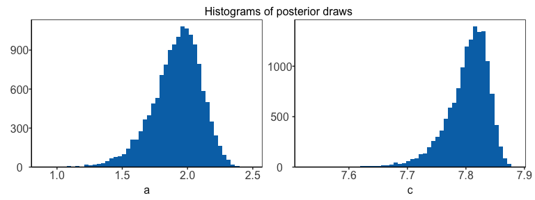
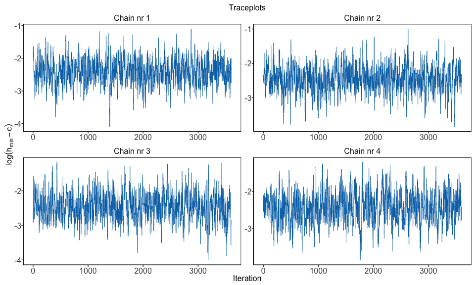

Introduction
Solvi Rognvaldsson, Rafael Daniel Vias, Birgir Hrafnkelsson and Axel Orn Jansson
Source:vignettes/introduction.Rmd
introduction.RmdA discharge rating curve is a model that describes the relationship between water elevation and discharge in a river. The rating curve is estimated from paired observations of water elevation and discharge and it is used to predict discharge for a given water elevation. This is the main practical usage of rating curves, as water elevation is substantially easier to directly observe than discharge. This R package implements four different discharge rating curve models using a Bayesian hierarchical modeling framework:
plm0()- Power-law model with constant log-error variance.plm()- Power-law model with stage-dependent log-error variance.gplm0()- Generalized power-law model with constant log-error variance.gplm()- Generalized power-law model with stage-dependent log-error variance.
For further details about the different models, see Hrafnkelsson et al. (2022). For an brief overview of the underlying theory, see our Background vignette.
The models differ in their complexity, gplm being the
most flexible and complex model. We will focus on the use of
gplm throughout this introduction vignette and explore the
different ways to fit the gplm and visualize its output.
However, the API of the functions for the other three models are almost
identical so this vignette also helps users to run those models.
We will use a dataset from a stream gauging station in Sweden, called Krokfors, that comes with the package:
> data(krokfors)
> head(krokfors)
#> W Q
#> 1 9.478000 10.8211700
#> 2 8.698000 1.5010000
#> 3 9.009000 3.3190000
#> 4 8.097000 0.1595700
#> 5 9.104000 4.5462500
#> 6 8.133774 0.2121178Fitting a discharge rating curve
Fitting a discharge rating curve with bdrc is
straightforward. Only two input arguments are mandatory:
formula and data. The formula
should of the form y ~ x, where y is the
discharge in cubic meters per second (m³/s), and x is the
water elevation (stage) in meters (m). It is crucial that the data is in
the correct units! The data argument must be a
data.frame including x and y as
column names. In our case, the Krokfors data has the discharge and water
elevation measurements stored in columns named Q and
W, respectively. We are ready to fit a discharge rating
curve using the gplm function:
> gplm.fit <- gplm(Q ~ W, data = krokfors, parallel = TRUE, num_cores = 2) # by default parallel=TRUE and the number of cores is detected on the machine
#> Progress:
#> Initializing Metropolis MCMC algorithm...
#> Multiprocess sampling (4 chains in 2 jobs) ...
#>
#> MCMC sampling completed!
#>
#> Diagnostics:
#> Acceptance rate: 25.33%.
#> ✔ All chains have mixed well (Rhat < 1.1).
#> ✔ Effective sample sizes sufficient (eff_n_samples > 400).The function prints out a summary of the fitting process and key MCMC diagnostics. These include the acceptance rate, chain mixing (assessed via the Gelman-Rubin statistic, ), and effective sample sizes. The checkmarks indicate that the algorithm has met important criteria for reliability. However, sometimes you may encounter warnings. For example:
#> ⚠ Warning: Some chains are not mixing well. Parameters with Rhat > 1.1:
#> - sigma_eta: Rhat = 1.281This warning suggests that certain parameters (in this case, sigma_eta) haven’t mixed well across chains, which could affect the reliability of the results. In such cases, the function provides advice:
#> ℹ Try re-running the model after inspecting the trace plots, convergence diagnostics plots, and reviewing the data for potential issues.This output helps you assess whether the discharge rating curve has
been fitted successfully and reliably using the specified data. The
function can be made to run silently by setting
verbose=FALSE.
Note that parallel=TRUE is the default setting,
utilizing all available cores on the machine. You can adjust the number
of cores with the num_cores argument if needed.
The gplm function returns an object of class
gplm which we can summarize and visualize using familiar
functions such as
> summary(gplm.fit)
#>
#> Formula:
#> Q ~ W
#> Latent parameters:
#> lower-2.5% median-50% upper-97.5%
#> a 1.47 1.94 2.23
#> b 1.83 1.84 1.84
#>
#> Hyperparameters:
#> lower-2.5% median-50% upper-97.5%
#> c 7.70955 7.8089 7.855
#> sigma_beta 0.42275 0.6942 1.258
#> phi_beta 0.54941 1.1775 2.861
#> sigma_eta 0.00298 0.0934 0.498
#> eta_1 -4.91521 -4.2508 -3.535
#> eta_2 -5.97953 -4.0555 -2.264
#> eta_3 -6.92387 -4.1874 -1.612
#> eta_4 -7.66667 -4.4852 -1.160
#> eta_5 -8.33270 -4.6096 -0.757
#> eta_6 -8.81259 -4.6718 -0.311
#>
#> WAIC: -27.81763and

In the next section, we will dive deeper into visualizing the gplm object.
Visualizing posterior distributions of different parameters
The bdrc package provides several tools to visualize the
results from model objects which can give insight into the physical
properties of the river at hand. For instance, the hyperparameter
corresponds to the water elevation of zero discharge. To visualize the
posterior of
,
we can write

Technically, instead of inferring directly, is inferred, where is the lowest water elevation value in the data. Since the parameter is strictly positive, a transformation is used for the Bayesian inference so that it has support on the real line. To plot the transformed posterior we write

The param argument can also be a vector containing
multiple parameter names. For example, to visualize the posterior
distributions of the parameters
and
,
we can write

There is a shorthand to visualize the hyperparameters all at once

Similarly, writing "latent_parameters" plots the latent
parameters in one plot. To plot the hyperparameters transformed on the
same scale as in the Bayesian inference, we write

Finally, we can visualize the components of the model that are
allowed (depending on the model) to vary with water elevation, that is,
the power-law exponent,
,
and the standard deviation of the error terms at the response level,
.
Both gplm0 and gplm generalize the power-law
exponent by modeling it as a sum of a constant term,
,
and Gaussian process,
,
namely
,
where
is assumed to be twice differentiable with mean zero. On the other hand,
plm and plm0 both model the power-law exponent
as a constant by setting
,
which gives
.
We can plot the inferred power-law exponent with

Both plm and gplm model the standard
deviation of the error terms at the response level,
,
as a function of water elevation, using B-splines basis functions, while
plm0 and gplm0 model the standard deviation as
a constant. We can plot the inferred standard deviation by writing

To get a visual summary of your model, the "panel"
option in the plot type is useful:

Assessing model fit and convergence
The package has several functions for convergence diagnostics of a
bdrc model, most notably the residual plot, trace plots,
autocorrelation plots, and Gelman-Rubin diagnostic plots. The
log-residuals can be plotted with
The log-residuals are calculated by subtracting the posterior estimate (median) of the log-discharge, , from the observed log-discharge, . Additionally, the plot includes the 95% predictive intervals of (- -) and 95% credible intervals for the expected value of (—), the latter reflecting the rating curve uncertainty.

To plot a trace plot for all the transformed hyperparameters, we write

To assess the mixing and convergence of the MCMC chains for each parameter, you can visualize the Gelman-Rubin statistic, , as presented by Gelman and Rubin (1992) with:

And finally, autocorrelation of parameters can be assessed with
Customizing the models
There are ways to further customize the gplm function.
In some instances, the parameter of zero discharge,
,
is known, and you might want to fix the model parameter to the known
value. In addition, you might want to extrapolate the rating curve to
higher water elevation values by adjusting the maximum water elevation.
Assume 7.65 m is the known value of
and you want to calculate the rating curve for water elevation values up
to 10 m, then your function call would look like this
Prediction for an equally spaced grid of water elevations
To get rating curve predictions for an equally spaced grid of water elevation values, you can use the predict function. Note that only values in the range from and h_max are accepted, as that is the range in which the Bayesian inference was performed
> h_grid <- seq(8, 8.2, by = 0.01)
> rating_curve_h_grid <- predict(gplm.fit, newdata = h_grid)
> print(rating_curve_h_grid)
#> h lower median upper
#> 1 8.00 0.06138853 0.08252241 0.1108601
#> 2 8.01 0.06708762 0.09009315 0.1207313
#> 3 8.02 0.07340524 0.09850833 0.1316830
#> 4 8.03 0.07972287 0.10692352 0.1426346
#> 5 8.04 0.08620981 0.11547827 0.1537808
#> 6 8.05 0.09363849 0.12480929 0.1660087
#> 7 8.06 0.10106716 0.13414031 0.1782366
#> 8 8.07 0.10861541 0.14364701 0.1906011
#> 9 8.08 0.11657272 0.15375469 0.2034327
#> 10 8.09 0.12453002 0.16386237 0.2162643
#> 11 8.10 0.13257126 0.17428375 0.2295413
#> 12 8.11 0.14080833 0.18543710 0.2438577
#> 13 8.12 0.14904540 0.19659045 0.2581741
#> 14 8.13 0.15728247 0.20774380 0.2724905
#> 15 8.14 0.16662200 0.21960922 0.2875367
#> 16 8.15 0.17662981 0.23190628 0.3030253
#> 17 8.16 0.18663761 0.24420333 0.3185138
#> 18 8.17 0.19681441 0.25692028 0.3351942
#> 19 8.18 0.20699699 0.26965158 0.3519154
#> 20 8.19 0.21718541 0.28270330 0.3691020
#> 21 8.20 0.22738677 0.29646391 0.3873184References
Gelman, A., & Rubin, D. B. (1992). Inference from iterative simulation using multiple sequences, Statistical Science, 7(4), 457–472. doi: https://doi.org/10.1214/ss/1177011136
Hrafnkelsson, B., Sigurdarson, H., Rögnvaldsson, S., Jansson, A. Ö., Vias, R. D., and Gardarsson, S. M. (2022). Generalization of the power-law rating curve using hydrodynamic theory and Bayesian hierarchical modeling, Environmetrics, 33(2):e2711. doi: https://doi.org/10.1002/env.2711